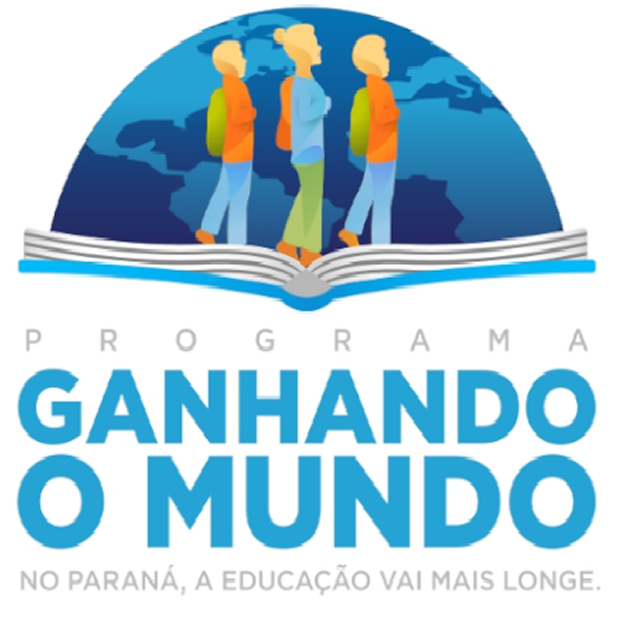

Ganhando o Mundo"é um programa de intercâmbio internacional promovido pela Secretaria de Estado da Educação do Paraná. Ele oferece a estudantes da rede pública estadual a oportunidade de estudar em países como Irlanda, Austrália, Canadá, Reino Unido e Nova Zelândia. O objetivo principal é ampliar o repertório cultural e acadêmico dos estudantes, além de consolidar uma rede de jovens líderes que possam aplicar o que aprenderam em suas escolas de origem.
A Cidadão Pró-Mundo é uma unidade de ensino gratuita que oferece aulas presencias ou virtuais de Língua inglesa, promovendo oportunidades para pessoas sem acesso ao cursos da língua.
Ganhando o Mundo Agrícola" é outra modalidade do programa de intercâmbio internacional da Secretaria de Estado . Ele oferece a estudantes da rede pública estadual do meio rural a oportunidade de estudar em países como Irlanda, Austrália, Canadá, Reino Unido e Nova Zelândia. Focando em abrir portas e conectar esses estudantes com o mundo.
O Programa Agrinho é um conjunto de ações de Educação e de Promoção Social, destinado a todos aqueles que atuam na educação e comunidade em geral. Ofertando concursos com prêmios variados nas modalidades de róbotica, programação e língua portuguesa.